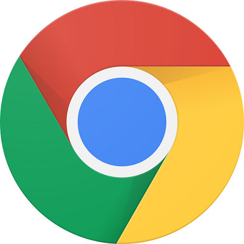
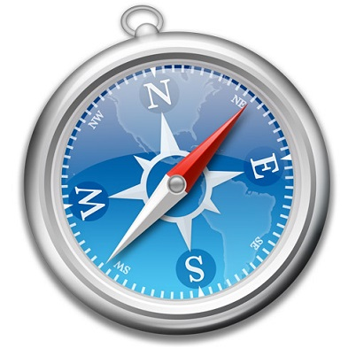
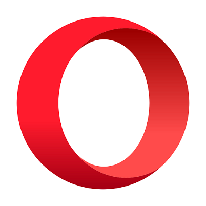
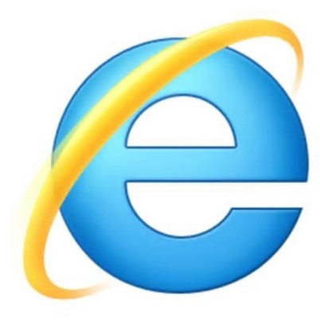

Google Chrome 使用最广的浏览器
Google Chrome（谷歌浏览器或叫酷容浏览器），是一个由Google（谷歌）公司开发的网页浏览器。该浏览器是基于其他开源软件所撰写，包括WebKit，目标是提升稳定性、速度和安全性，并创造出简单且有效率的使用者界面。

Mozilla Firefox 美丽的狐狸
Mozilla Firefox，中文俗称“火狐”（正式缩写为Fx或fx，非正式缩写为FF），是一个自由及开放源代码网页浏览器，使用Gecko排版引擎，支持多种操作系统，如Windows、Mac OS X及GNU/Linux等。
Safari Mac用户首选
Safari 是一款浏览器、一个平台，也是对锐意创新的公开邀请。无论在 Mac、PC 或 iPod touch 上运行，Safari 都可提供极致愉悦的网络体验方式，更不断地改写浏览器的定义。


Opera 小众但易用
Opera浏览器，是一款挪威Opera Software ASA公司制作的支持多页面标签式浏览的网络浏览器，是跨平台浏览器可以在Windows、Mac和Linux三个操作系统平台上运行。Opera浏览器创始于1995年4月。
IE 你懂的
Internet Explorer，是微软公司推出的一款网页浏览器。原称Microsoft Internet Explorer(6版本以前)和Windows Internet Explorer(7、8、9、10、11版本)，简称IE。在IE7以前，中文直译为“网络探路者”，但在IE7以后官方便直接俗称"IE浏览器"。

Maxthon 国人的 世界的
傲游浏览器（傲游1.x、2.x为IE内核，3.x为IE与Webkit双核）是一款多功能、个性化多标签浏览器。